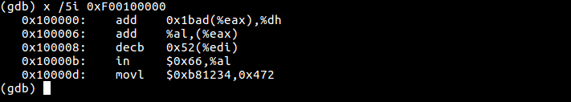
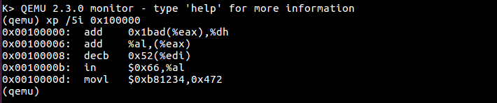
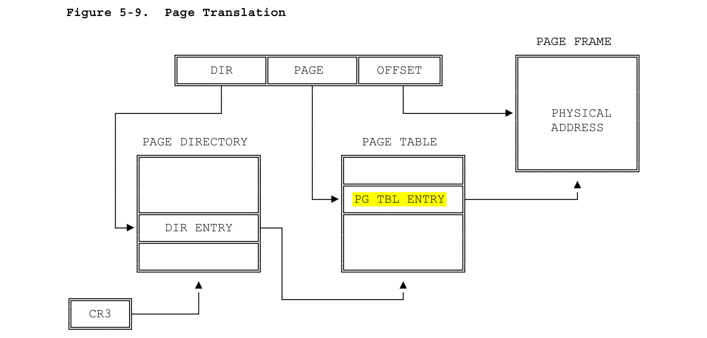
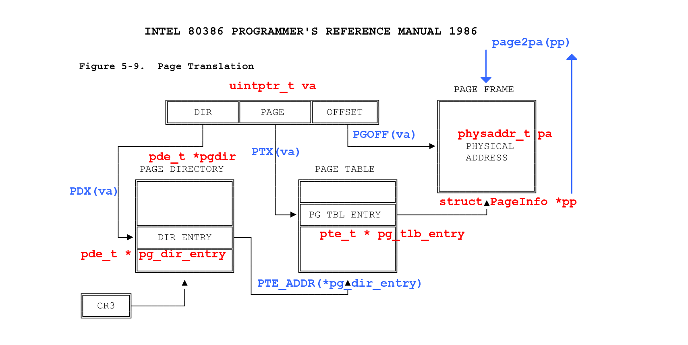

Lab 2: Memory Management
代码请见https://coding.net/u/yangminz/p/MITJOS/git。可以通过clone:
git clone https://git.coding.net/yangminz/MITJOS.git
方式获取代码并且cd目录、切换branch运行。
Introduction
In this lab, you will write the memory management code for your operating system. Memory management has two components.
The first component is a physical memory allocator for the kernel, so that the kernel can allocate memory and later free it. Your allocator will operate in units of 4096 bytes, called pages. Your task will be to maintain data structures that record which physical pages are free and which are allocated, and how many processes are sharing each allocated page. You will also write the routines to allocate and free pages of memory.
The second component of memory management is virtual memory, which maps the virtual addresses used by kernel and user software to addresses in physical memory. The x86 hardware's memory management unit (MMU) performs the mapping when instructions use memory, consulting a set of page tables. You will modify JOS to set up the MMU's page tables according to a specification we provide.
Getting started
In this and future labs you will progressively build up your kernel. We will also provide you with some additional source. To fetch that source, use Git to commit changes you've made since handing in lab 1 (if any), fetch the latest version of the course repository, and then create a local branch called lab2 based on our lab2 branch, origin/lab2:
athena% cd ~/6.828/lab athena% add git athena% git pull Already up-to-date. athena% git checkout -b lab2 origin/lab2 Branch lab2 set up to track remote branch refs/remotes/origin/lab2. Switched to a new branch "lab2" athena%
The git checkout -b command shown above actually does two things: it first creates a local branch lab2 that is based on the origin/lab2 branch provided by the course staff, and second, it changes the contents of your lab directory to reflect the files stored on the lab2 branch. Git allows switching between existing branches using git checkout branch-name, though you should commit any outstanding changes on one branch before switching to a different one.
You will now need to merge the changes you made in your lab1 branch into the lab2 branch, as follows:
athena% git merge lab1 Merge made by recursive. kern/kdebug.c | 11 +++++++++-- kern/monitor.c | 19 +++++++++++++++++++ lib/printfmt.c | 7 +++---- 3 files changed, 31 insertions(+), 6 deletions(-) athena%
In some cases, Git may not be able to figure out how to merge your changes with the new lab assignment (e.g. if you modified some of the code that is changed in the second lab assignment). In that case, the git merge command will tell you which files are conflicted, and you should first resolve the conflict (by editing the relevant files) and then commit the resulting files with git commit -a.
Lab 2 contains the following new source files, which you should browse through:
- inc/memlayout.h
- kern/pmap.c
- kern/pmap.h
- kern/kclock.h
- kern/kclock.c
memlayout.h describes the layout of the virtual
address space that you must implement by modifying pmap.c.
memlayout.h and pmap.h define the PageInfo
structure that you'll use to keep track of which pages of
physical memory are free.
kclock.c and kclock.h
manipulate
the PC's battery-backed clock and CMOS RAM hardware,
in which the BIOS records the amount of physical memory the PC contains,
among other things.
The code in pmap.c needs to read this device hardware
in order to figure out how much physical memory there is,
but that part of the code is done for you:
you do not need to know the details of how the CMOS hardware works.
Pay particular attention to memlayout.h and pmap.h, since this lab requires you to use and understand many of the definitions they contain. You may want to review inc/mmu.h, too, as it also contains a number of definitions that will be useful for this lab.
Before beginning the lab, don't forget to add -f 6.828 to get the 6.828 version of QEMU.
Lab Requirements
In this lab and subsequent labs, do all of the regular exercises described in the lab and at least one challenge problem. (Some challenge problems are more challenging than others, of course!) Additionally, write up brief answers to the questions posed in the lab and a short (e.g., one or two paragraph) description of what you did to solve your chosen challenge problem. If you implement more than one challenge problem, you only need to describe one of them in the write-up, though of course you are welcome to do more. Place the write-up in a file called answers-lab2.txt in the top level of your lab directory before handing in your work.
Hand-In Procedure
When you are ready to hand in your lab code and write-up, add your answers-lab2.txt to the Git repository, commit your changes, and then run make handin.
athena% git add answers-lab2.txt athena% git commit -am "my answer to lab2" [lab2 a823de9] my answer to lab2 4 files changed, 87 insertions(+), 10 deletions(-) athena% make handin
As before, we will be grading your solutions with a grading program. You can run make grade in the lab directory to test your kernel with the grading program. You may change any of the kernel source and header files you need to in order to complete the lab, but needless to say you must not change or otherwise subvert the grading code.
Part 1: Physical Page Management
The operating system must keep track of which parts of physical RAM are free and which are currently in use. JOS manages the PC's physical memory with page granularity so that it can use the MMU to map and protect each piece of allocated memory.
You'll now write the physical page allocator. It keeps track of which
pages are free with a linked list of struct PageInfo objects
(which, unlike xv6, are not embedded in the free pages themselves),
each corresponding to a physical page. You need to write the physical
page allocator before you can write the rest of the virtual memory
implementation, because your page table management code will need to
allocate physical memory in which to store page tables.
Exercise 1. In the file kern/pmap.c, you must implement code for the following functions (probably in the order given).
boot_alloc()
mem_init() (only up to the call to check_page_free_list(1))
page_init()
page_alloc()
page_free()
check_page_free_list() and
check_page_alloc() test your physical page allocator.
You should boot JOS and see whether check_page_alloc()
reports success. Fix your code so that it passes. You may find it
helpful to add your own assert()s to verify that
your assumptions are correct.
内存由2^{15}个4KB大小的物理页组成，物理页由页表元素pages[i]管理和索引。将这个页表分配在物理地址中，是mem_init()的任务，通过boot_alloc()实现。
页表在物理地址中占用了一段空间以后，能够映射到整个物理地址上进行内存管理。而pages自己占用的空间通过页表管理可以看到是[341, 405]，之前与之后都有空闲的页。这些空闲的页通过page_init()函数中的page_free_list管理起来。
被管理的空闲页通过page_alloc()函数进行链表操作，将空闲页分配出来；通过page_free()函数也进行链表操作，将空闲页返还给页表。
boot_alloc()
既然char end[]是通过链接自动获得的，并且指向内核bss段的结尾，也就是说接下来的空间都是链接过程没有分配的虚拟地址。所以需要从end开始，分配n字节的空间，更新nextfree并且保持它对齐。
实际上注意到nextfree赋值的情况：
nextfree = ROUNDUP((char *) end, PGSIZE);
显然这个ROUNDUP函数或者宏比较重要，所以就grep找一下这个表达式：
yangminz@yangminz-VM:~/MITJOS$ find . -name "*.*" | xargs grep "ROUNDUP" grep: .: Is a directory ./inc/types.h:#define ROUNDUP(a, n) \ grep: ./.git: Is a directory ./obj/kern/kernel.asm: ROUNDUP(end - entry, 1024) / 1024); ./obj/kern/kernel.asm: ROUNDUP(end - entry, 1024) / 1024); ./kern/monitor.c: ROUNDUP(end - entry, 1024) / 1024); ./kern/pmap.c: nextfree = ROUNDUP((char *) end, PGSIZE); ./kern/pmap.c: n = ROUNDUP(npages*sizeof(struct PageInfo), PGSIZE);
可见果然在./inc/types.h中的全部大写的表达式果然是宏，其作用是找到a附近的n对齐的地址。所以，要将虚拟地址向后开辟n，只要增加n的PGSIZE对齐就可以了：
if (n != 0){
nextfree += ROUNDUP(n, PGSIZE);
}
从后面的调用看，boot_alloc()的作用有点像malloc()。实际上，在分发的lab2.pdf手册中，"页面管理链表在内存中的存储和放置"这一节里也已经给出了方法。
mem_init()
LAB2中这个函数只需要完成到check_page_free_list(1)以前，只有一处需要写代码的地方：分配一个N页struct PageInfo的数组，并且储存到pages。对于每个物理页，都有一个struct PageInfo与之对应。而这部分的定义，都在pmap.h中，已经extern声明，可以直接调用。
这样只要通过boot_alloc()分配空间就好：
pages = (struct PageInfo *)boot_alloc(sizeof(struct PageInfo) * npages);
memset(pages, 0, sizeof(struct PageInfo) * npages);
cprintf("pages in pmap.c: %08x", pages);
另外，需要提及的是，实验手册lab2.pdf用的代码可能是旧版本，所以手册中的Page实际上是PageInfo。
page_init()
页初始化按照注释，分为四个部分：
// 1) [0, 0] in use // 2) [1, npages_basemem) is free. // 3) [IOPHYSMEM/PGSIZE, EXTPHYSMEM/PGSIZE) in use // 4) [EXTPHYSMEM/PGSIZE, ...)
而代码也给出了空闲的情形，所以按照四个分类进行讨论即可。页总数是npages，按顺序遍历页。
可以打印一下，观察几个参数，有助于分析：
cprintf("=====================\n");
cprintf("[1, npages_basemem)=[1, %u) \n", npages_basemem);
cprintf("[IOPHYSMEM/PGSIZE, EXTPHYSMEM/PGSIZE)=[%u, %u) \n", IOPHYSMEM/PGSIZE, EXTPHYSMEM/PGSIZE);
cprintf("[EXTPHYSMEM/PGSIZE, ...)=[%u, ...) \n", EXTPHYSMEM/PGSIZE);
cprintf("=====================\n");
实际上，从手册的图4的内存分配可以看到，四种情况对应的内存管理：
1、[0, 0]对应于第一个页，占用内存4KB，物理地址实际上是[0, 4KB]。这部分内存是被占用不能分配的，用来保存real-mode IDT和BIOS。
2、[1, npages_basemem)对应了接下来的一段空闲内存，映射到物理地址是[PGSIZE, npages_basemem * PGSIZE)。在函数page_init()插入一段打印语句，查看一下npages_basemem的值，就可以看到实际上是0x000000a0，而相应的物理地址是0x000a0000
3、[IOPHYSMEM/PGSIZE, EXTPHYSMEM/PGSIZE).由于地址的连续性，所以IOPHYSMEM==npages_basemem * PGSIZE。物理地址到EXTPHYSMEM为止，大小是0x00100000。
4、[EXTPHYSMEM/PGSIZE, ...)这一区间比较麻烦。有些内存被占用，有些空闲。从图4的内存管理开看，0x100000开始就是ELF hearder，随后是大片大片的被占用的内存，包括BIOS, Kernel, Page Directory, pages。到pages结束，可以通过：
PGNUM((int)((char *)pages) + (sizeof(struct PageInfo) * npages) - 0xf0000000)求出pages最后占用的内存，也就是接下来更大片大片的空闲内存页的起始页。其中宏PGNUM在inc/mmu.h中定义，作用是根据物理地址求出页表序号。通过打印，可以看到到这里空闲页开始的页序号是405，而一共有32768(=2^{15})的页。由此可见，实际上被占用的页只占了页表中很小一部分，这也是符合常理的。
通过上面的讨论，就可以将遍历时的页分类组织了：
size_t i;
uint32_t pages_end = PGNUM((int)((char *)pages) + (sizeof(struct PageInfo) * npages) - 0xf0000000);
for (i = 0; i < npages; i++) {
if ((1 <= i && i < npages_basemem) || pages_end <= i){
pages[i].pp_ref = 0;
pages[i].pp_link = page_free_list;
page_free_list = &pages[i];
}
}
page_alloc()
根据lab2手册，基本上page_alloc()和page_free()属于页表的链表操作。
if (page_free_list == NULL)
return NULL;
struct PageInfo * ptr = page_free_list;
ptr->pp_link = NULL;
page_free_list = page_free_list->pp_link;
if (alloc_flags & ALLOC_ZERO){
memset(page2kva(ptr), 0, PGSIZE);
}
return ptr;
这个操作将page_init()组织的空闲页链表page_free_list的第一个页结点取出，将头指针指向下一个页结点，并且返还取下的结点指针。最后，将这取出的空闲页所对应的物理地址区间用零填充。
page_free()
page_free()直接采用前插入法就行：
if (pp->pp_ref != 0 || pp->pp_link != NULL){
panic("error at pointer field\n");
}
pp->pp_link = page_free_list;
page_free_list = pp;
check
check 成功：
yangminz@yangminz-VM:~/MITJOS$ make qemu + cc kern/pmap.c + ld obj/kern/kernel + mk obj/kern/kernel.img qemu-system-i386 -drive file=obj/kern/kernel.img,index=0,media=disk,format=raw -serial mon:stdio -gdb tcp::26000 -D qemu.log 6828 decimal is XXX octal! Physical memory: 131072K available, base = 640K, extended = 130432K check_page_alloc() succeeded! kernel panic at kern/pmap.c:704: assertion failed: page_insert(kern_pgdir, pp1, 0x0, PTE_W) < 0 Welcome to the JOS kernel monitor! Type 'help' for a list of commands. Color test! K>
This lab, and all the 6.828 labs, will require you to do a bit of detective work to figure out exactly what you need to do. This assignment does not describe all the details of the code you'll have to add to JOS. Look for comments in the parts of the JOS source that you have to modify; those comments often contain specifications and hints. You will also need to look at related parts of JOS, at the Intel manuals, and perhaps at your 6.004 or 6.033 notes.
Part 2: Virtual Memory
Before doing anything else, familiarize yourself with the x86's protected-mode memory management architecture: namely segmentation and page translation.
Exercise 2. Look at chapters 5 and 6 of the Intel 80386 Reference Manual, if you haven't done so already. Read the sections about page translation and page-based protection closely (5.2 and 6.4). We recommend that you also skim the sections about segmentation; while JOS uses paging for virtual memory and protection, segment translation and segment-based protection cannot be disabled on the x86, so you will need a basic understanding of it.
从80386手册的5.2节可以看到，实际上这里的内存管理机制是二级页表。和课本8.5节页表结构中讲得二级页表完全一致。低12位是页偏移，然后高10位是外部页表的偏移，再高10位是外部页表的索引。

基本上要求阅读的章节都和接下来的实验有关，所以就不特地作答了，融入到下面的实验过程中。
Virtual, Linear, and Physical Addresses
In x86 terminology, a virtual address consists of a segment selector and an offset within the segment. A linear address is what you get after segment translation but before page translation. A physical address is what you finally get after both segment and page translation and what ultimately goes out on the hardware bus to your RAM.
Selector +--------------+ +-----------+
---------->| | | |
| Segmentation | | Paging |
Software | |-------->| |----------> RAM
Offset | Mechanism | | Mechanism |
---------->| | | |
+--------------+ +-----------+
Virtual Linear Physical
|
A C pointer is the "offset" component of the virtual address.
In boot/boot.S, we installed a Global Descriptor Table (GDT)
that effectively disabled segment translation by setting all segment
base addresses to 0 and limits to 0xffffffff. Hence the
"selector" has no effect and the linear address always equals the
offset of the virtual address. In lab 3,
we'll have to interact a little more with segmentation to set up
privilege levels, but as for memory translation, we can
ignore segmentation throughout the JOS labs and focus solely on page
translation.
Recall that in part 3 of lab 1, we installed a simple page table so that the kernel could run at its link address of 0xf0100000, even though it is actually loaded in physical memory just above the ROM BIOS at 0x00100000. This page table mapped only 4MB of memory. In the virtual memory layout you are going to set up for JOS in this lab, we'll expand this to map the first 256MB of physical memory starting at virtual address 0xf0000000 and to map a number of other regions of virtual memory.
Exercise 3. While GDB can only access QEMU's memory by virtual address, it's often useful to be able to inspect physical memory while setting up virtual memory. Review the QEMU monitor commands from the lab tools guide, especially the xp command, which lets you inspect physical memory. To access the QEMU monitor, press Ctrl-a c in the terminal (the same binding returns to the serial console).
Use the xp command in the QEMU monitor and the x command in GDB to inspect memory at corresponding physical and virtual addresses and make sure you see the same data.
Our patched version of QEMU provides an info pg command that may also prove useful: it shows a compact but detailed representation of the current page tables, including all mapped memory ranges, permissions, and flags. Stock QEMU also provides an info mem command that shows an overview of which ranges of virtual memory are mapped and with what permissions.
在qemu monitor中所采用的地址是物理地址，而gdb对程序员可见的地址是逻辑地址，因此在使用gdb的命令时，需要在高位增加字段：


From code executing on the CPU, once we're in protected mode (which we entered first thing in boot/boot.S), there's no way to directly use a linear or physical address. All memory references are interpreted as virtual addresses and translated by the MMU, which means all pointers in C are virtual addresses.
The JOS kernel often needs to manipulate addresses as opaque values
or as integers, without dereferencing them, for example in the
physical memory allocator. Sometimes these are virtual addresses,
and sometimes they are physical addresses. To help document the code, the
JOS source distinguishes the two cases: the
type uintptr_t represents opaque virtual addresses,
and physaddr_t represents physical addresses. Both these
types are really just synonyms for 32-bit integers
(uint32_t), so the compiler won't stop you from assigning
one type to another! Since they are integer types (not pointers), the
compiler will complain if you try to dereference them.
The JOS kernel can dereference a uintptr_t by first
casting it to a pointer type. In contrast,
the kernel can't sensibly dereference a physical
address, since the MMU translates all memory references.
If you cast a physaddr_t to a pointer and dereference it,
you may be able to load and store to the resulting address (the hardware
will interpret it as a virtual address), but you probably won't
get the memory location you intended.
To summarize:
| C type | Address type |
|---|---|
T* | Virtual |
uintptr_t | Virtual |
physaddr_t | Physical |
Question
- Assuming that the
following JOS kernel code is correct, what type
should variable
xhave,uintptr_torphysaddr_t?mystery_t x; char* value = return_a_pointer(); *value = 10; x = (mystery_t) value;
根据在手册中提到的数据类型原则，可以知道既然x是一个指针，而C中的指针都是虚拟地址，而且对physaddr_t的强制类型转换时，会将物理地址视作虚拟地址来进行类型转换（这样就出错了），那么mystery_t应当是虚拟地址uintptr_t。
The JOS kernel sometimes needs to read or modify memory for which it
knows only the physical address. For example, adding a mapping to a
page table may require allocating physical memory to store a page
directory and then initializing that memory. However, the kernel,
like any other software, cannot bypass virtual memory translation and thus
cannot directly load and store to physical addresses. One reason JOS
remaps all of physical memory starting from physical address 0 at
virtual address
0xf0000000 is to help the kernel read and write memory
for which it knows just the physical address. In order to translate a
physical address into a virtual address that the kernel can actually
read and write, the kernel must add 0xf0000000 to the
physical address to find its corresponding virtual address in the
remapped region. You should use KADDR(pa) to do that
addition.
The JOS kernel also sometimes needs to be able to find a physical
address given the virtual address of the memory in which a kernel data
structure is stored. Kernel global variables and memory allocated by
boot_alloc() are in the region where the kernel was
loaded, starting at 0xf0000000, the
very region where we mapped all of physical memory.
Thus, to turn a virtual address in this region into a physical
address, the kernel can simply
subtract 0xf0000000. You should use PADDR(va)
to do that subtraction.
Reference counting
In future labs you will often have the same physical page mapped at
multiple virtual addresses simultaneously (or in the address spaces of
multiple environments). You will keep a count of the number of
references to each physical page in the pp_ref field of
the struct PageInfo corresponding to the physical page. When
this count goes to zero for a physical page, that page can be freed
because it is no longer used. In general, this count should be equal to the
number of times the physical page appears below
UTOP in all page tables (the mappings above
UTOP are mostly set up at boot time by the kernel and
should never be freed, so there's no need to reference count them).
We'll also use it to keep track of the number of pointers we keep to
the page directory pages and, in turn, of the number of references the
page directories have to page table pages.
Be careful when using page_alloc. The page it returns will always have a reference count of 0, so pp_ref should be incremented as soon as you've done something with the returned page (like inserting it into a page table). Sometimes this is handled by other functions (for example, page_insert) and sometimes the function calling page_alloc must do it directly.
Page Table Management
Now you'll write a set of routines to manage page tables: to insert and remove linear-to-physical mappings, and to create page table pages when needed.
Exercise 4. In the file kern/pmap.c, you must implement code for the following functions.
pgdir_walk()
boot_map_region()
page_lookup()
page_remove()
page_insert()
check_page(), called from mem_init(),
tests your page table management routines.
You should make sure it reports success before proceeding.
pgdir_walk()
这个函数要求从二级页表中返回形参虚拟地址va的page table entry，而二级页表的结构是这样的：
pte_t *
pgdir_walk(pde_t *pgdir, const void *va, int create)
{
// Fill this function in
pde_t * pg_dir_entry = NULL;
pte_t * pg_tlb = NULL;
struct PageInfo * new_page_frame = NULL;
pg_dir_entry = &pgdir[PDX(va)];
// Present bit = 1 indicates that the entry can be used
if(*pg_dir_entry & PTE_P){
pg_tlb = KADDR(PTE_ADDR(*pg_dir_entry));
return &pg_tlb[PTX(va)];
}
// PTE present bit = 0: the page table not exist
else{
// do not create
if(create == 0){
//cprintf("pgdir_walk: do not create\n");
return NULL;
}
new_page_frame = page_alloc(ALLOC_ZERO);
// fail to allocate
if(new_page_frame == NULL){
//cprintf("pgdir_walk: fail to allocate\n");
return NULL;
}
pg_tlb = (pte_t*)page2kva(new_page_frame);
// the new page's reference count is incremented
new_page_frame->pp_ref ++;
*pg_dir_entry = PADDR(pg_tlb)|PTE_P|PTE_W|PTE_U;
}
return &pg_tlb[PTX(va)];
}
boot_map_region()
这个函数主要依赖于函数pgdir_walk()，并且建立页表保存的映射。扫描一遍区间[va, va+size)，每一个虚拟地址通过页表映射到物理地址空间[pa, pa+size)上，这样页的地址可以通过二级页表的页偏移找到，就像上一个函数所做的那样，而它保存的数值就变成了物理地址。这样就建立了逻辑地址到物理地址的映射。
static void
boot_map_region(pde_t *pgdir, uintptr_t va, size_t size, physaddr_t pa, int perm)
{
// Fill this function in
pte_t * pg_tlb_entry = NULL;
uintptr_t va_ind = va;
physaddr_t pa_ind = pa;
int i = 0;
ROUNDUP(size, PGSIZE);
for(i = 0; i < size/PGSIZE; i ++){
pg_tlb_entry = pgdir_walk(pgdir, va_ind, 1);
if(pg_tlb_entry == NULL) return;
*pg_tlb_entry = PTE_ADDR(pa_ind) | (perm|PTE_P);
pa_ind += PGSIZE;
va_ind += PGSIZE;
}
}
page_lookup()
这个函数用来检测页是否存在。大体思路和pgdir_walk()差不多，所以可以用函数调用：
struct PageInfo *
page_lookup(pde_t *pgdir, void *va, pte_t **pte_store)
{
// Fill this function in
//cprintf("page lookup \n");
pte_t * pg_tlb_entry = pgdir_walk(pgdir, va, 0);
*pte_store = pg_tlb_entry;
//cprintf("*pg_tlb_entry\t%08x\n", *pg_tlb_entry);
if(pg_tlb_entry == NULL)
return NULL;
return pa2page(PTE_ADDR(* pg_tlb_entry));
}
利用pgdir_walk()查找到page table entry之后，将找到的entry放到pte_store中，然后返回所找到的物理页帧（page frame）。
page_remove()
要取消逻辑地址va到物理地址pa之间的映射，将映射页表中对应的项清零即可。
void
page_remove(pde_t *pgdir, void *va)
{
// Fill this function in
pte_t * pg_tlb_entry = pgdir_walk(pgdir, va, 0);
pte_t **pte_store = &pg_tlb_entry;
struct PageInfo* page_frame = page_lookup(pgdir, va, pte_store);
// The physical page should be freed if the refcount reaches 0
if(page_frame == NULL) return;
// The ref count on the physical page should decrement
page_decref(page_frame);
// The pg table entry corresponding to 'va' should be set to 0
** pte_store = 0;
// The TLB must be invalidated if you remove an entry
tlb_invalidate(pgdir, va);
}
page_insert()
page_insert()是集上面所有函数之大成的函数。将之前做的所有内容汇聚到这张图上：

代码是这样的：
int
page_insert(pde_t *pgdir, struct PageInfo *pp, void *va, int perm)
{
// cprintf("page insert\n");
// Fill this function in
pte_t * pg_tlb_entry = pgdir_walk(pgdir, va, 1);
physaddr_t pa = page2pa(pp);
if(pg_tlb_entry == NULL)
return -E_NO_MEM;
// If there is already a page mapped at 'va', it should be page_remove()d
if(*pg_tlb_entry & PTE_P){
if(PTE_ADDR(*pg_tlb_entry) == pa){
// The TLB must be invalidated if a page was formerly present at 'va'
tlb_invalidate(pgdir, va);
pp->pp_ref --;
}
else{ page_remove(pgdir, va); }
}
// a page table should be allocated and inserted into 'pgdir'
* pg_tlb_entry = page2pa(pp)|perm|PTE_P;
// pp->pp_ref should be incremented if the insertion succeeds
pp->pp_ref ++;
return 0;
}
在测试的时候遇到了bug，check到这里有问题：
// there is no free memory, so we can't allocate a page table
assert(page_insert(kern_pgdir, pp1, 0x0, PTE_W) < 0);
// free pp0 and try again: pp0 should be used for page table
page_free(pp0);
assert(page_insert(kern_pgdir, pp1, 0x0, PTE_W) == 0);
第一次insert由于没有空闲的内存，所以应该返回错误参数。然后释放了pp0之后，应该是有空闲内存可以使用了，然而我的程序依然返回了没有空闲的错误参数。奇怪的是，上一个测试check_page_alloc()通过了，应该在内存管理上面没有问题。为了调试这个错误，我尝试了打印空闲表、在walk函数里分类打印错误类型，果然发现不是内存管理的bug。然后重新修改了pgdir_walk()就通过了。
实际上后来page_remove()也遇到过同样的问题，也需要回头修改。这是这道题非常蛋疼的地方，只有把所有函数都写完才能debug。。。
Part 3: Kernel Address Space
JOS divides the processor's 32-bit linear address space
into two parts.
User environments (processes),
which we will begin loading and running in lab 3,
will have control over the layout and contents of the lower part,
while the kernel always maintains complete control over the upper part.
The dividing line is defined somewhat arbitrarily
by the symbol ULIM in inc/memlayout.h,
reserving approximately 256MB of virtual address space
for the kernel.
This explains why we needed to give the kernel
such a high link address in lab 1:
otherwise there would not be enough room in the kernel's virtual address space
to map in a user environment below it at the same time.
You'll find it helpful to refer to the JOS memory layout diagram in inc/memlayout.h both for this part and for later labs.
Permissions and Fault Isolation
Since kernel and user memory are both present in each environment's address space, we will have to use permission bits in our x86 page tables to allow user code access only to the user part of the address space. Otherwise bugs in user code might overwrite kernel data, causing a crash or more subtle malfunction; user code might also be able to steal other environments' private data. Note that the writable permission bit (PTE_W) affects both user and kernel code!
The user environment will have no permission to any of the
memory above ULIM, while the kernel will be able to
read and write this memory. For the address range
[UTOP,ULIM), both the kernel and the user environment have
the same permission: they can read but not write this address range.
This range of address is used to expose certain kernel data structures
read-only to the user environment. Lastly, the address space below
UTOP is for the user environment to use; the user environment
will set permissions for accessing this memory.
Initializing the Kernel Address Space
Now you'll set up the address space above UTOP: the
kernel part of the address space. inc/memlayout.h shows
the layout you should use. You'll use the functions you just wrote to
set up the appropriate linear to physical mappings.
Exercise 5.
Fill in the missing code in mem_init() after the
call to check_page().
Your code should now pass the check_kern_pgdir()
and check_page_installed_pgdir() checks.
/* * Virtual memory map: Permissions * kernel/user * * 4 Gig --------> +------------------------------+ * | | RW/-- ** . . * . . * . . * |~~~~~~~~~~~~~~~~~~~~~~~~~~~~~~| * | Program Data & Heap | * UTEXT --------> +------------------------------+ 0x00800000 * PFTEMP -------> | Empty Memory (*) | PTSIZE * | | * UTEMP --------> +------------------------------+ 0x00400000 --+ * | Empty Memory (*) | | * | - - - - - - - - - - - - - - -| | * | User STAB Data (optional) | PTSIZE * USTABDATA ----> +------------------------------+ 0x00200000 | * | Empty Memory (*) | | * 0 ------------> +------------------------------+ --+ */
根据inc/memlayout.h中的示意图，从ULIM向上的内存是属于内核的，而以下的空间是属于用户的，内核保有了大概256M的空间。为了建立映射，直接调用上一题写到boot_map_regin()即可。
Question
- What entries (rows) in the page directory have been filled in
at this point? What addresses do they map and where do they
point? In other words, fill out this table as much as possible:
Entry Base Virtual Address Points to (logically): 1023 ? Page table for top 4MB of phys memory 1022 ? ? . ? ? . ? ? . ? ? 2 0x00800000 ? 1 0x00400000 ? 0 0x00000000 [see next question] - We have placed the kernel and user environment in the same address space. Why will user programs not be able to read or write the kernel's memory? What specific mechanisms protect the kernel memory?
- What is the maximum amount of physical memory that this operating system can support? Why?
- How much space overhead is there for managing memory, if we actually had the maximum amount of physical memory? How is this overhead broken down?
- Revisit the page table setup in kern/entry.S and kern/entrypgdir.c. Immediately after we turn on paging, EIP is still a low number (a little over 1MB). At what point do we transition to running at an EIP above KERNBASE? What makes it possible for us to continue executing at a low EIP between when we enable paging and when we begin running at an EIP above KERNBASE? Why is this transition necessary?
Question 2
| Entry | Base Virtual Address | Points to (logically): |
| 1023 | 0xffc00000 | Page table for top 4MB of phys memory(0x003be007) |
| 1022 | 0xff800000 | 0x003bf007 |
| . | ? | ? |
| . | ? | ? |
| . | ? | ? |
| 2 | 0x00800000 | 0x00000000 |
| 1 | 0x00400000 | 0x00000000 |
| 0 | 0x00000000 | [see next question] |
Question 3
根据手册和注释所描述的，虚拟内存通过ULIM和UTOP分段了。其中[0, UTOP]只允许用户进程读写，(UTOP, ULIM]是用户和内核都可读，(ULIM, 4GB)只允许内核读写。他们之间的访问控制通过permission位来进行控制。
Question 4
进入JOS的时候就会显示相关的信息：
Physical memory: 131072K available, base = 640K, extended = 130432K
可以看到，可用的物理内存是128M，其中base有640K，extend有128M-640K的物理内存。这一段输出相应的代码仍然在kern/pmap.c中：
cprintf("Physical memory: %uK available, base = %uK, extended = %uK\n",
totalmem, basemem, totalmem - basemem);
Question 5
用来管理内存的内存，应该就是全部页表和索引所占据的空间。4KB * 1024 + 4KB这么多。
Question 6
在
# Now paging is enabled, but we're still running at a low EIP # (why is this okay?). Jump up above KERNBASE before entering # C code. mov $relocated, %eax jmp *%eax
之后，eip到了KERNBASE之上。既能在低eip分页，也能在高位上运行的原因在于，不仅虚拟地址[KERNBASE, KERNBASE+4MB) 被映射到物理地址[0, 4MB)，同时虚拟地址[0, 4MB)也被映射到同一段物理地址。所以当eip在物理地址[0, 4MB)上时，它既在低位的[0, 4MB)，也在高位[KERNBASE, KERNBASE+4MB)。这是一个过渡的状态，过一会儿页索引会被加载进来而虚拟地址[0, 4MB)就被舍弃了。
Challenge!
We consumed many physical pages to hold the
page tables for the KERNBASE mapping.
Do a more space-efficient job using the PTE_PS ("Page Size") bit
in the page directory entries.
This bit was not supported in the original 80386,
but is supported on more recent x86 processors.
You will therefore have to refer to
Volume 3
of the current Intel manuals.
Make sure you design the kernel to use this optimization
only on processors that support it!
这题我看了好久列出的英特尔手册，基本上还是没有一点儿概念。实在太challenging，做不出来。
Challenge! Extend the JOS kernel monitor with commands to:
- Display in a useful and easy-to-read format all of the physical page mappings (or lack thereof) that apply to a particular range of virtual/linear addresses in the currently active address space. For example, you might enter 'showmappings 0x3000 0x5000' to display the physical page mappings and corresponding permission bits that apply to the pages at virtual addresses 0x3000, 0x4000, and 0x5000.
- Explicitly set, clear, or change the permissions of any mapping in the current address space.
- Dump the contents of a range of memory given either a virtual or physical address range. Be sure the dump code behaves correctly when the range extends across page boundaries!
- Do anything else that you think might be useful later for debugging the kernel. (There's a good chance it will be!)
通过 find . -name "*.c" | xargs grep "readline" 这样的命令，找到了在kern/monitor.c中的命令行输入输出的代码。所有输入的命令通过
struct Command {
const char *name;
const char *desc;
// return -1 to force monitor to exit
int (*func)(int argc, char** argv, struct Trapframe* tf);
};
数组进行了管理，通过函数指针func进行调用。所以要增加命令，只需要在数组里增加元组即可。注意要在kern/monitor.h中增加函数申明。实现方式就按照exercise 4中的question，根据permission控制就行：
int showmappings(uint32_t va1, uint32_t va2);
int mon_showmappings(int argc, char **argv, struct Trapframe *tf){
uint32_t va1, va2;
uint32_t va = 0;
bool unexpected = false;
if(argc != 3)
unexpected = true;
if(!(va1 = strtol(argv[1], NULL, 16)))
unexpected = true;
if(!(va2 = strtol(argv[2], NULL, 16)))
unexpected = true;
if( va1 != ROUNDUP(va1, PGSIZE) ||
va2 != ROUNDUP(va2, PGSIZE) ||
va1 > va2)
unexpected = true;
if(unexpected){
cprintf("Not expected number! Usage\n");
cprintf(" > showmappings 0xva_low 0xva_high\n");
return 0;
}
showmappings(va1, va2);
return 0;
}
permission设定相对简单很多，直接修改即可。但是要注意的是，通过pgdir_walk()查询时，如果遇到了没有建立过映射、permission的虚拟地址，我就直接同时给它分配空间，所以pgdir_walk()的create位是1。
extern pde_t *kern_pgdir;
pte_t * pgdir_walk(pde_t *pgdir, const void *va, int create);
int mon_permission(int argc, char **argv, struct Trapframe *tf){
uint32_t va=0, perm=0;
char type, flag;
pte_t * pte;
bool unexpected = false;
if(argc != 4 || !(va = strtol(argv[1], NULL, 16)))
unexpected = true;
type = argv[2][0];
if(va != ROUNDUP(va, PGSIZE) || !(type == 'c' || type == 's'))
unexpected = true;
flag = argv[3][0];
switch(flag){
case 'P': perm = PTE_P; break;
case 'W': perm = PTE_W; break;
case 'U': perm = PTE_U; break;
default: unexpected = true; break;
}
if(unexpected)
{
cprintf("Not expected input! Usage\n");
cprintf(" > permission 0xva [c|s :clear or set] [P|W|U]\n");
return 0;
}
pte = pgdir_walk(kern_pgdir, (const void*)va, 1);
cprintf("origin: 0x%08x\tP: %1d\tW: %1d\tU: %1d\n", va, *pte&PTE_P, *pte&PTE_W, *pte&PTE_U);
if(type == 'c'){
cprintf("clearing virtual addr 0x%08x permission\n", va);
*pte = *pte & ~perm;
}
else{
cprintf("setting virtual addr 0x%08x permission\n", va);
*pte = *pte | perm;
}
cprintf("current: 0x%08x\tP: %1d\tW: %1d\tU: %1d\n", va, *pte&PTE_P, *pte&PTE_W, *pte&PTE_U);
return 0;
}
这个命令的dump虚拟内存倒是比较简单的，但是物理内存完全没有头绪。dump虚拟内存，只需要让指针指向输入的虚拟地址，然后不断移动指针，既打印指针地址又打印指针值即可。但是如果直接用相同的代码去打印物理地址，JOS就会调出debug模式。
物理内存我想不到方便的方法，上网看了其他人的做法：北大的张弛的做法是，推断出KERNBASE以上的虚拟地址完全将物理地址覆盖，所以只需要简单地给指针加一个偏置就行。
int mon_dumpmemory(int argc, char **argv, struct Trapframe *tf){
bool unexpected = false;
uint32_t n = -1, i = 0, bias = KERNBASE/4;
void ** addr = NULL;
char type;
type = argv[1][0];
if(argc != 4 || !(addr = (void **)strtol(argv[2], 0, 16)))
unexpected = true;
n = strtol(argv[3], 0, 0);
if(addr != ROUNDUP(addr, PGSIZE) ||
!(type == 'p' || type == 'v') ||
n <= 0)
unexpected = true;
if(unexpected){
cprintf("Not expected input! Usage:\n");
cprintf(" > dumpmem [p|v addr type] 0xaddr N\n");
}
if(type == 'p'){
cprintf("!\n");
for(i = bias; i < n + bias; i ++)
cprintf("physical memory:0x%08x\tvalue:0x%08x\n", addr + i, addr[i]);
}
if(type == 'v'){
for(i = 0; i < n; i ++)
cprintf("virtual memory:0x%08x\tvalue:0x%08x\n", addr + i, addr[i]);
}
return 0;
}
Address Space Layout Alternatives
The address space layout we use in JOS is not the only one possible. An operating system might map the kernel at low linear addresses while leaving the upper part of the linear address space for user processes. x86 kernels generally do not take this approach, however, because one of the x86's backward-compatibility modes, known as virtual 8086 mode, is "hard-wired" in the processor to use the bottom part of the linear address space, and thus cannot be used at all if the kernel is mapped there.
It is even possible, though much more difficult, to design the kernel so as not to have to reserve any fixed portion of the processor's linear or virtual address space for itself, but instead effectively to allow user-level processes unrestricted use of the entire 4GB of virtual address space - while still fully protecting the kernel from these processes and protecting different processes from each other!
Challenge! Write up an outline of how a kernel could be designed to allow user environments unrestricted use of the full 4GB virtual and linear address space. Hint: the technique is sometimes known as "follow the bouncing kernel." In your design, be sure to address exactly what has to happen when the processor transitions between kernel and user modes, and how the kernel would accomplish such transitions. Also describe how the kernel would access physical memory and I/O devices in this scheme, and how the kernel would access a user environment's virtual address space during system calls and the like. Finally, think about and describe the advantages and disadvantages of such a scheme in terms of flexibility, performance, kernel complexity, and other factors you can think of.
总体上的想法和和Linux中设立swap区的意图是相似的。
通常Linux系统中，如果用户进程[0GB, 3GB)通过中断或者系统调用去寻址内核空间[3GB, 4GB]时，会触发处理器特权级从3切换到0，从而操作系统从用户态切换到内核态。
如果要让用户进程无限制地使用全部4GB内存，不要让操作系统切换态，而是建立一个外存到内存的映射。
建立这个映射是为了让用户能够访问[3GB, 4GB]的内存，原本存放在这里的内核信息被转移到外存，同时在内存上记录下这个映射的信息以便能够恢复。将内核信息转移到外存以后，这部分内核空间就空闲出来了，用户进程就能够使用。等用户进程退出之后，再通过在内存上记录的映射信息将外存的内核信息映射回来。
优点自然是用户进程能够多获得1GB的空间，而缺点是这样内存、外存之间的数据传输速度很慢。
更多的细节实在是太复杂，我做不出来，至于提示中说的follow the bouncing kernel，我在网上找了一圈也没找到太多信息，找到的基本上也都看不懂。能力有限，这题只能做成这样。
Challenge!
Since our JOS kernel's memory management system
only allocates and frees memory on page granularity,
we do not have anything comparable
to a general-purpose malloc/free facility
that we can use within the kernel.
This could be a problem if we want to support
certain types of I/O devices
that require physically contiguous buffers
larger than 4KB in size,
or if we want user-level environments,
and not just the kernel,
to be able to allocate and map 4MB superpages
for maximum processor efficiency.
(See the earlier challenge problem about PTE_PS.)
Generalize the kernel's memory allocation system to support pages of a variety of power-of-two allocation unit sizes from 4KB up to some reasonable maximum of your choice. Be sure you have some way to divide larger allocation units into smaller ones on demand, and to coalesce multiple small allocation units back into larger units when possible. Think about the issues that might arise in such a system.
这道challenge实在是很challenging，超出我自己的能力和时间范围了，所以只能作罢。
This completes the lab. Make sure you pass all of the make grade tests and don't forget to write up your answers to the questions and a description of your challenge exercise solution in answers-lab2.txt. Commit your changes (including adding answers-lab2.txt) and type make handin in the lab directory to hand in your lab.